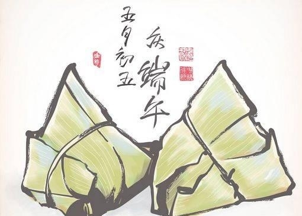
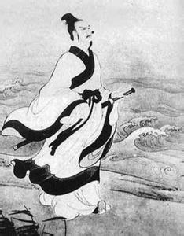
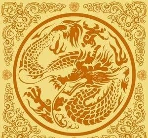
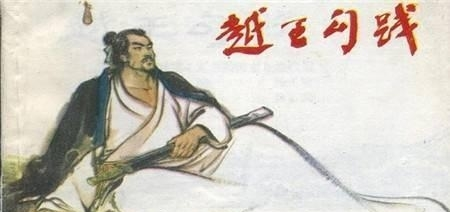
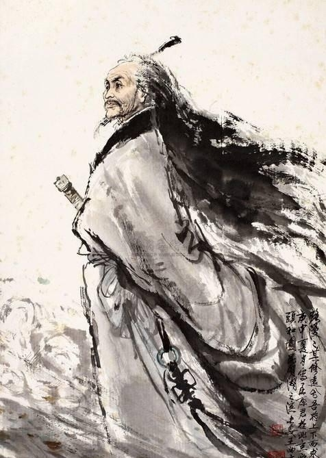
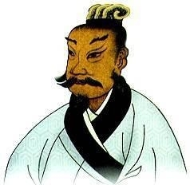
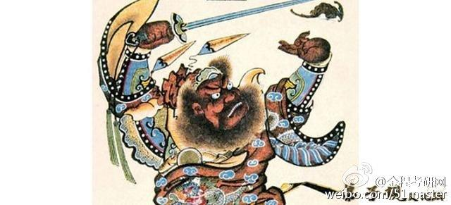
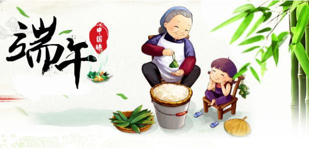

端午节简述:
农历五月初五，是中国民间的传统节日——端午节，它是中华民族古老的传统节日之一。端午也称端五，端阳。此外，端午节还有许多别称，如：午日节、重五节，五月节、浴兰节、女儿节，天中节、地腊、诗人节、龙日等等。虽然名称不同，但总体上说，各地人民过节的习俗还是同多于异的。
过端午节，是中国人二千多年来的传统习惯，由于地域广大，民族众多，加上许多故事传说，于是不仅产生了众多相异的节名，而且各地也有着不尽相同的习俗。其内容主要有：女儿回娘家，挂钟馗像，迎鬼船、躲午，帖午叶符，悬挂菖蒲、艾草，游百病，佩香囊，备牲醴,赛龙舟，比武，击球，荡秋千，给小孩涂雄黄，饮用雄黄酒、菖蒲酒，吃五毒饼、咸蛋、粽子和时令鲜果等，除了有迷信色彩的活动渐已消失外，其余至今流传中国各地及邻近诸国。有些活动，如赛龙舟等，已得到新的发展，突破了时间、地域界线，成为了国际性的体育赛事。
时至今日，端午节仍是中国人民中一个十分盛行的隆重节日。

端午节，又称端阳节、午日节、五月节、艾节、端五、重午、午日、夏节。端是“开端”、“初”的意思，初五可以称为端五。

纪念屈原
《续齐谐记》中云：楚大夫爱国诗人屈原遭谗不用，五月初五投汨罗江而死。楚人同情他，每年这个日子，用竹筒贮米投水祭祀他，并划船救他。后演变为投粽子和龙舟竞渡。

龙图腾祭节
闻一多列举了百余条古籍、专家考古史料，认为端午节起源于中国古代南方吴越民族举行的龙图腾祭祀节日。随着北方民族大规模南迁，端午节日的风俗逐渐传遍全国。

纪念勾践
春秋末年，越王勾践被吴国打败俘虏，他卧薪尝胆，忍辱负重3年后回国，定于五月初五开始操练水兵。经过10年奋斗，终于报仇雪耻灭了吴国。为永记勾践，人们便在五月初五划船竞渡，后便成节日。

纪念伍子胥
据《荆楚岁时记》载：伍子胥因为耿直倔强，爱讲真话，被诬为谋反。公元前484年五月初五，昏君夫差“赐”剑让他自杀，并把其遗体投入江中，他随流扬波成涛神。此后吴国百姓开始在此日在水里划船迎涛神，祭祀伍子胥的英灵，这就是赛龙舟的由来。

纪念陈临
东汉广西苍梧太守陈临，推诚而导黎民，执政开明，见恩于百姓，深得百姓爱戴。有一次，民间有个遗腹子，成人后为了报杀父之仇，杀了仇人，被官府逮捕，判处死刑。陈临知他无后嗣，令其妻到狱中陪他，待怀孕并产下小孩后，才执法。所以人们在五月初五，在祖祠举行典仪，拜祭陈临。

恶日
端午是夏天的开始，各类疾病瘟疫孽生为灾。因此，古人规定在端午这一天，要插菖蒲，烧艾叶、苍术、白芷，捣大蒜，饮雄黄酒等习俗，这些都是为了卫生防疫。
夏至
端午节的风俗，大多源于夏至风俗，也有过如夏至祭祀等的活动。《岁华纪丽》对端午第一个解释就是：“日叶正阳，时当中夏。”只有在夏至，太阳才可能完全处于正阳的位置。端午又叫天中节的原因也在于此。魏晋南北朝时期，端午节与夏至节并行于世。民国后，曾改端午节为夏节，届时，政府、学校放假。

其他起源
此外还有起源于纪念介子推、马援、白洁夫人、刘王景、钟馗；起源于辟邪、季节适应、三代兰浴之说法。